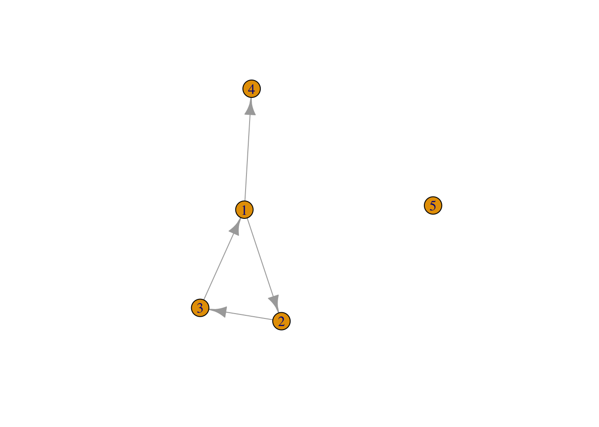
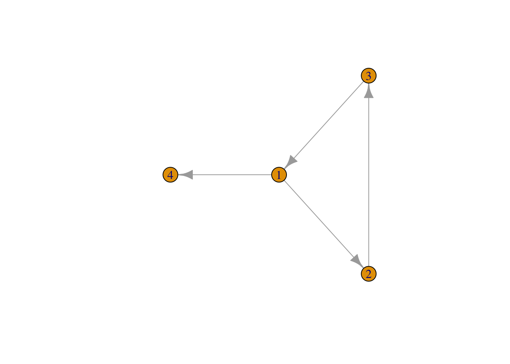
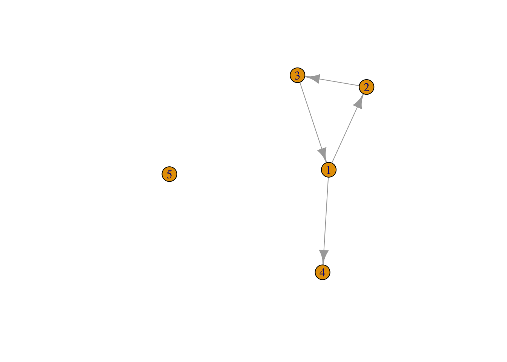

Last compiled on April, 2026
Lab 1 Handling social
network data in R
Loading packages:
library(network)
library(igraph)
library(reshape2)
library(tidyverse)
Loading data:
url1 <- "https://github.com/rensec/sasr08/raw/main/g_adj_matrix_simple.csv"
g_matrix <- read.csv(file = url1, header = FALSE)
g_matrix
#> V1 V2 V3 V4 V5
#> 1 0 1 0 1 0
#> 2 0 0 1 0 0
#> 3 1 0 0 0 0
#> 4 0 0 0 0 0
#> 5 0 0 0 0 0
Convert to matrix:
g_matrix <- as.matrix(g_matrix)
g_matrix
#> V1 V2 V3 V4 V5
#> [1,] 0 1 0 1 0
#> [2,] 0 0 1 0 0
#> [3,] 1 0 0 0 0
#> [4,] 0 0 0 0 0
#> [5,] 0 0 0 0 0
rownames(g_matrix) <- 1:nrow(g_matrix)
colnames(g_matrix) <- 1:ncol(g_matrix)
g_matrix
#> 1 2 3 4 5
#> 1 0 1 0 1 0
#> 2 0 0 1 0 0
#> 3 1 0 0 0 0
#> 4 0 0 0 0 0
#> 5 0 0 0 0 0
ANSWER: There are 5 nodes, and 4 edges.
Retrieve additional information
g_nodes_age <- read.csv(file = "https://github.com/rensec/sasr08/raw/main/g_nodes_age.csv")
g_nodes_age
#> id age
#> 1 1 20
#> 2 2 21
#> 3 3 25
#> 4 4 NA
#> 5 5 21
Convert to igraph object:
g <- graph_from_adjacency_matrix(g_matrix)
class(g)
#> [1] "igraph"
g
#> IGRAPH 4f6066c DN-- 5 4 --
#> + attr: name (v/c)
#> + edges from 4f6066c (vertex names):
#> [1] 1->2 1->4 2->3 3->1
Add attributes and plot:
g <- set_vertex_attr(g,
name = "age",
value = g_nodes_age$age)
plot(g)

Also with edge list:
g_elist <- read.csv(file = "https://github.com/rensec/sasr08/raw/main/g_elist.csv")
g_elist
#> from to
#> 1 1 2
#> 2 2 3
#> 3 3 1
#> 4 1 4
g_from_elist <- graph_from_data_frame(g_elist)
plot(g_from_elist)

NOTE: must includde isolate
g_from_elist <- graph_from_data_frame(g_elist, vertices = g_nodes_age)
plot(g_from_elist)

LS0tCnRpdGxlOiAiSm91cm5hbCAxIgphdXRob3I6ICJCb2dkYW4gQ3V6YSIKLS0tCgpgYGB7ciwgZ2xvYmFsc2V0dGluZ3MsIGVjaG89RkFMU0UsIHdhcm5pbmc9RkFMU0UsIHJlc3VsdHM9J2hpZGUnfQpsaWJyYXJ5KGtuaXRyKQoKa25pdHI6Om9wdHNfY2h1bmskc2V0KGVjaG8gPSBUUlVFKQpvcHRzX2NodW5rJHNldCh0aWR5Lm9wdHM9bGlzdCh3aWR0aC5jdXRvZmY9MTAwKSx0aWR5PVRSVUUsIHdhcm5pbmcgPSBGQUxTRSwgbWVzc2FnZSA9IEZBTFNFLGNvbW1lbnQgPSAiIz4iLCBjYWNoZT1UUlVFLCBjbGFzcy5zb3VyY2U9YygidGVzdCIpLCBjbGFzcy5vdXRwdXQ9YygidGVzdDIiKSkKb3B0aW9ucyh3aWR0aCA9IDEwMCkKCgoKY29sb3JpemUgPC0gZnVuY3Rpb24oeCwgY29sb3IpIHtzcHJpbnRmKCI8c3BhbiBzdHlsZT0nY29sb3I6ICVzOyc+JXM8L3NwYW4+IiwgY29sb3IsIHgpIH0KCmBgYAoKYGBge3Iga2xpcHB5LCBlY2hvPUZBTFNFLCBpbmNsdWRlPVRSVUV9CmtsaXBweTo6a2xpcHB5KHBvc2l0aW9uID0gYygndG9wJywgJ3JpZ2h0JykpCiNrbGlwcHk6OmtsaXBweShjb2xvciA9ICdkYXJrcmVkJykKI2tsaXBweTo6a2xpcHB5KHRvb2x0aXBfbWVzc2FnZSA9ICdDbGljayB0byBjb3B5JywgdG9vbHRpcF9zdWNjZXNzID0gJ0RvbmUnKQpgYGAKCkxhc3QgY29tcGlsZWQgb24gYHIgZm9ybWF0KFN5cy50aW1lKCksICclQiwgJVknKWAKCjxicj4KCi0tLS0tLS0tLS0tLS0tLS0tLS0tLS0tLS0tLS0tLS0tLS0tLS0tLS0tLS0tLS0tLS0tLS0tLS0tLS0tLS0tLS0tLS0tLS0tLQoKIyBMYWIgMSBIYW5kbGluZyBzb2NpYWwgbmV0d29yayBkYXRhIGluIFIKCi0tLS0tLS0tLS0tLS0tLS0tLS0tLS0tLS0tLS0tLS0tLS0tLS0tLS0tLS0tLS0tLS0tLS0tLS0tLS0tLS0tLS0tLS0tLS0tLQoKTG9hZGluZyBwYWNrYWdlczoKYGBge3J9CmxpYnJhcnkobmV0d29yaykKbGlicmFyeShpZ3JhcGgpCmxpYnJhcnkocmVzaGFwZTIpCmxpYnJhcnkodGlkeXZlcnNlKQpgYGAKCkxvYWRpbmcgZGF0YToKYGBge3J9CnVybDEgPC0gImh0dHBzOi8vZ2l0aHViLmNvbS9yZW5zZWMvc2FzcjA4L3Jhdy9tYWluL2dfYWRqX21hdHJpeF9zaW1wbGUuY3N2IgpnX21hdHJpeCA8LSByZWFkLmNzdihmaWxlID0gdXJsMSwgaGVhZGVyID0gRkFMU0UpCmdfbWF0cml4CmBgYAoKQ29udmVydCB0byBtYXRyaXg6CmBgYHtyfQpnX21hdHJpeCA8LSBhcy5tYXRyaXgoZ19tYXRyaXgpCmdfbWF0cml4CmBgYAoKYGBge3J9CnJvd25hbWVzKGdfbWF0cml4KSA8LSAxOm5yb3coZ19tYXRyaXgpCmNvbG5hbWVzKGdfbWF0cml4KSA8LSAxOm5jb2woZ19tYXRyaXgpCmdfbWF0cml4CmBgYAoKKipBTlNXRVIqKjogVGhlcmUgYXJlIDUgbm9kZXMsIGFuZCA0IGVkZ2VzLgoKUmV0cmlldmUgYWRkaXRpb25hbCBpbmZvcm1hdGlvbgpgYGB7cn0KZ19ub2Rlc19hZ2UgPC0gcmVhZC5jc3YoZmlsZSA9ICJodHRwczovL2dpdGh1Yi5jb20vcmVuc2VjL3Nhc3IwOC9yYXcvbWFpbi9nX25vZGVzX2FnZS5jc3YiKQpnX25vZGVzX2FnZQpgYGAKCkNvbnZlcnQgdG8gaWdyYXBoIG9iamVjdDoKYGBge3J9CmcgPC0gZ3JhcGhfZnJvbV9hZGphY2VuY3lfbWF0cml4KGdfbWF0cml4KQpjbGFzcyhnKQpnCmBgYAoKQWRkIGF0dHJpYnV0ZXMgYW5kIHBsb3Q6CmBgYHtyfQpnIDwtIHNldF92ZXJ0ZXhfYXR0cihnLCAKICAgICAgICAgICAgICAgICAgICAgbmFtZSA9ICJhZ2UiLAogICAgICAgICAgICAgICAgICAgICB2YWx1ZSA9IGdfbm9kZXNfYWdlJGFnZSkKcGxvdChnKQpgYGAKCkFsc28gd2l0aCBlZGdlIGxpc3Q6CmBgYHtyfQpnX2VsaXN0IDwtIHJlYWQuY3N2KGZpbGUgPSAiaHR0cHM6Ly9naXRodWIuY29tL3JlbnNlYy9zYXNyMDgvcmF3L21haW4vZ19lbGlzdC5jc3YiKQpnX2VsaXN0CmdfZnJvbV9lbGlzdCA8LSBncmFwaF9mcm9tX2RhdGFfZnJhbWUoZ19lbGlzdCkgCnBsb3QoZ19mcm9tX2VsaXN0KQpgYGAKCioqTk9URSoqOiBtdXN0IGluY2x1ZGRlIGlzb2xhdGUKCmBgYHtyfQpnX2Zyb21fZWxpc3QgPC0gZ3JhcGhfZnJvbV9kYXRhX2ZyYW1lKGdfZWxpc3QsIHZlcnRpY2VzID0gZ19ub2Rlc19hZ2UpIApwbG90KGdfZnJvbV9lbGlzdCkKYGBg